Setup iBeacon
Um ein neues iBeacon von Bytereal zu hochfahren und initialisieren, bracht man hauptsächlich zwei Schritten: Hardware initialisieren und mit App (Entweder Realkit oder Pluslabbeacon) die ansprechende Parameter einzustellen.
Hardware Initialisieren
- Schraub das Gehäuse von dem iBeacon auseinandr.
- Stecken Sie die Batterie (CR2477) ein.
- Schalten Sie die klein Schalter von "OFF" zu "ON"
- Legen Sie die Platinen wieder in dem Gehäuse ein.
- Schraube Sie die Teile von Gehäuse wieder zusammen.
mit Realkit (iOS)
Schritt 1: Laden App von App Store herunter
iOS version RealKit in Apple Appstore finden. 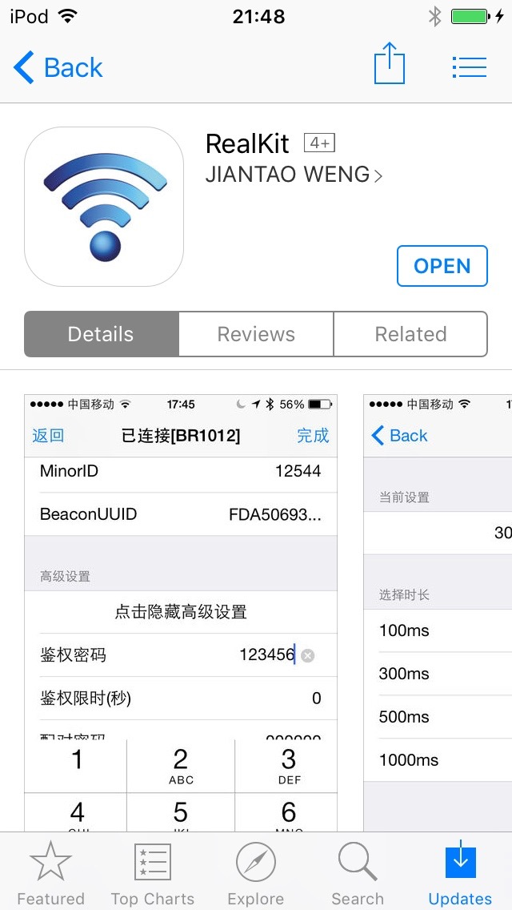
Schritt 2: App starten
Realkit App starten.
Man steht die Liste von aller Beacons (Bluetooth Geräten) in der Nähr.

Schritt 3: Mit einem Beacon verbinden
Wählen eine gewünschte Gerät.
Wenn Geheimzahl Popup Box auftaucht, drück "Nein".
(Die default Geheimzahl ist "000000")
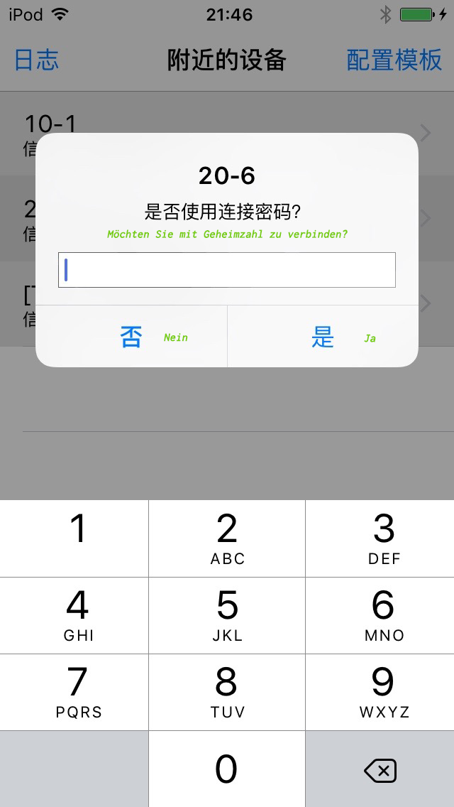
Schritt 4: Basic Einstellungenen
Die aufgelistete Artikel von hier entspricht nur für diese ausgewählte Gerät.
Für ein neues Beacon soll man alle Basic Einstellungen durch einstellen. Wenn man einen Artikel einstellen möchte, soll man den entsprechenden Artikel drücken, und in dem entweder popup box oder einer neuen Seite die gewünschte parameter auswählen / eingeben. Für das Projekt von Franckesches Stiftungen:
- Broadcast Interval: 200ms
- major: nach Plannung
- minor: nach Plannung
- UUID: FDA50693-A4E2-4FB1-AFCF-C6EB07647825
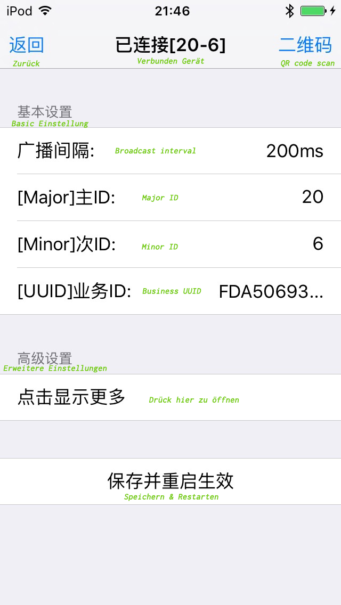
Schritt 5: Erweitere Einstellungen
Die Bedienung von erweitere Einstellungen ist gleich wie Basic Einstellung.
Für das Projekt von Franckesches Stiftung, nur die folgende Artikel eingestellt werden (Die andere bleibt default):
| Artikel Name | Wert | Notiz | |
|---|---|---|---|
| Gerät Name | 'major'-'minor' | z.B. 20-1, Max.16 Chars | |
| Broadcast Interval | 200ms | ||
| major | - | nach Gruppen | |
| minor | - | jede ist einzigartig |
Die default Werte von Bytereal Beacon:
| Artikel Name | Wert | Notiz | |
|---|---|---|---|
| Major | 10 | range: 0 - 65535 | |
| Minor | 7 | range: 0 - 65535 | |
| iBeacon UUID | FDA50693-A4E2-4FB1 -AFCF-C6EB07647825 |
||
| broadcast Interval | 500ms | ||
| broadcast Name | ByteReal | Firma Name | |
| Deploy Mode | Nein | ||
| Tx-Power | 0dbm / high | Radio senden stärke | |
| Measure Power | -59db | gleich zu 1 meter | |
| LED | Aus | Wenn An, flacke das LED |
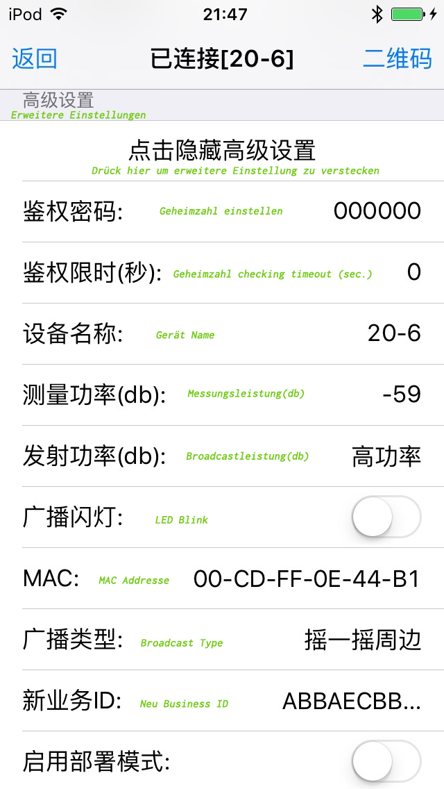
Schritt 6: Erweitere Einstellungen2 & Reboot
Wenn Alle Einstellungen schon durch eingestellt werden. Soll man "Speicher & Restarten" Taste Drücken. Dadurch alle Einstellungen gültig sein werden. Dieses Gerät würde reboot mit neue eingestellte Parameteren.
P.s. : Wenn "Deploy Modus" eingeschaltet wird, würde das Beacon nach Reboot nur "connectable" inner halb 3 Minuten, danach nicht mehr möglich. Wenn man das Gerät wieder einstellen möchte, soll man das Beacon rebooten.
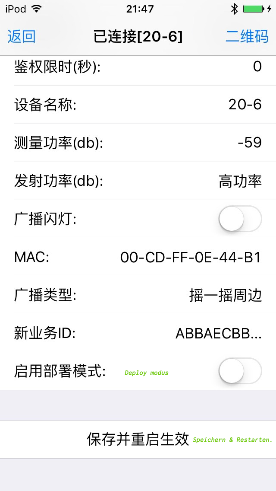
mit Realkit (android)
Schritt 1: App Install
Suchen das Software Package realkit 2.8.3.apk aus, und in Android Gerät darauf drücken, um die Software erst zu installieren.
Schritt 2: App starten
Wenn die App startet, seht man die Liste von alle Beacons (Bluetooth Gerät) in der Nähr.
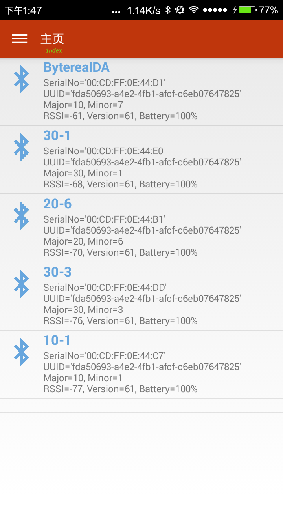
Schritt 3: Mit einem Beacon verbinden
Suchen das gewünschte Gerät aus, und darauf drück.
Es dauert eine kurze Weile bis das Beacon mit der Handy verbunden.
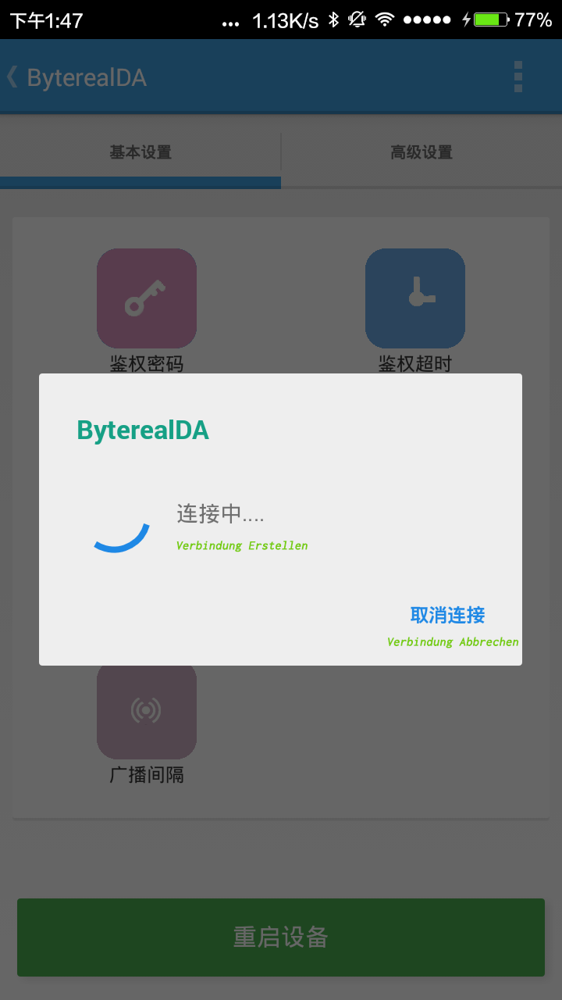
Schritt 4: Basic Einstellungen
In der Basic Einstellung Tab soll man nur Major&Minor, iBeacon UUID und Broadcast Interval einstellen. Die Parameteren sollte wie daoben die Beschreibung für iOS Platform identisch sein.
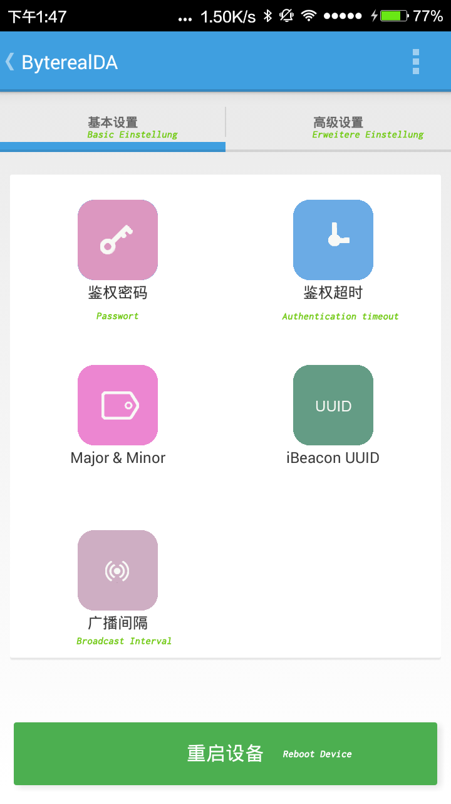
Major & Minor Einstellung
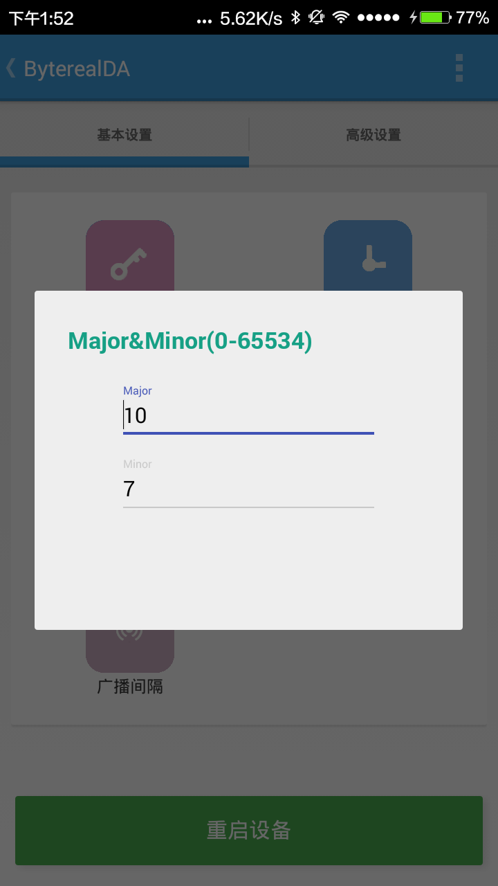
UUID Einstellung
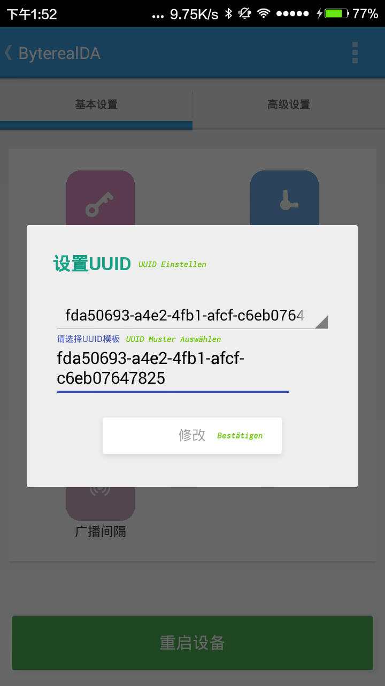
Broadcast Interval Einstellung
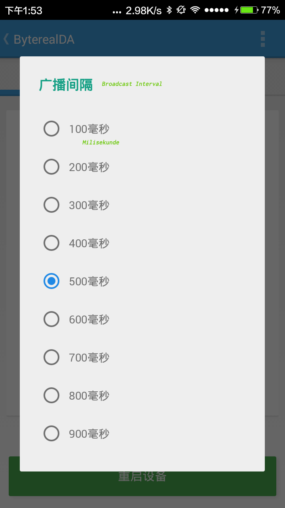
Schritt 5: Erweitere Einstellungen
In erweitere Einstellungen soll man für eine neue Beacon nur "Device Name", "Broadcastleistung" einstellen. Alle andere Artikel bleiben wie es war. Die ganzen Parameter Einstellung Werte kann man aber in Schritt 5 für iOS Platform ausfinden.
Am Ende soll man wieder "Reboot Device" Klicken. Nach der Reboot, alle eingestellte Wert würde erst gültig sein.
P.s. Das Detail von Deploy Modus bitte sehen Sie die Beschreibung in der Block für iOS Platform Einstellung.
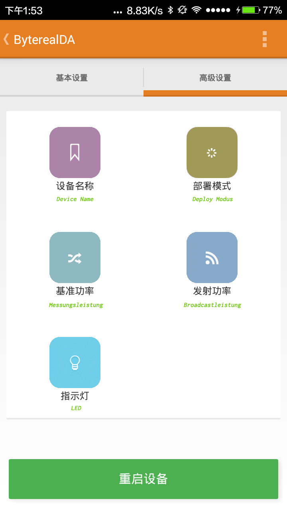
Mit PluslabBeacon (android)
Es gibt keine grundsatzlich Bedienung-Unterschied zwischen PluslabBeacon und Realkit. Das Workflow ist immer:
- Gewünschte Gerät auswählen
- Unterschiedliche Parameter einstellen
- Reboot das Gerät
P.S. : Die Einstellungsmöglichkeiten von PluslabBeacon ist eingeschrankt, aber es reicht für alle Einstellungen von diesem Projekt aus. Ich (Su Gao) hat mit diesem App 83 iBeacons problemlos eingestellt. Die Android min. unterstützte Version von dieser App is Android 4.3 (API:18).